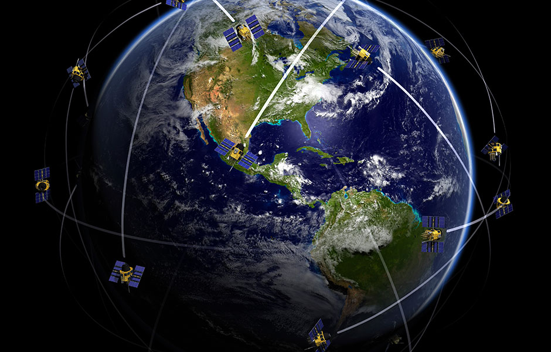
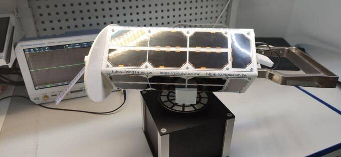
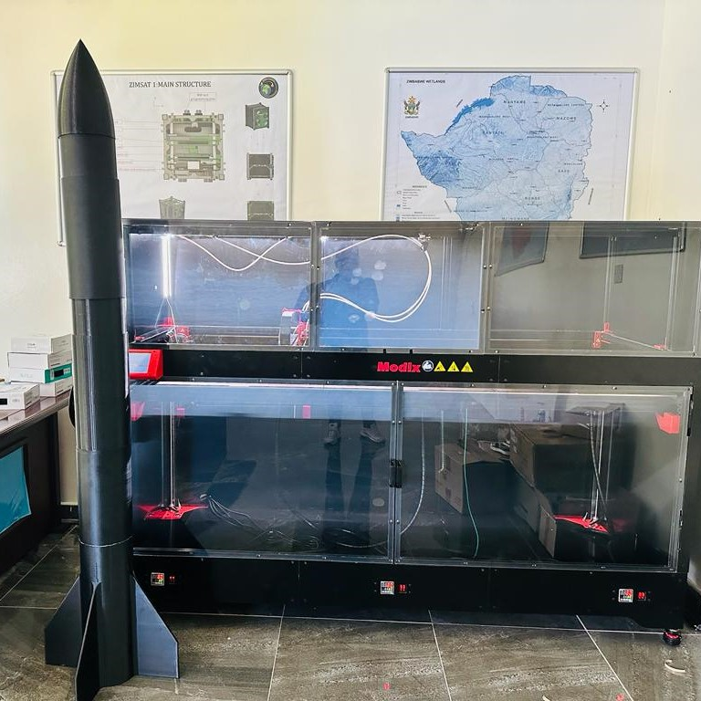
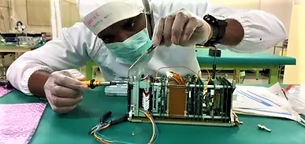
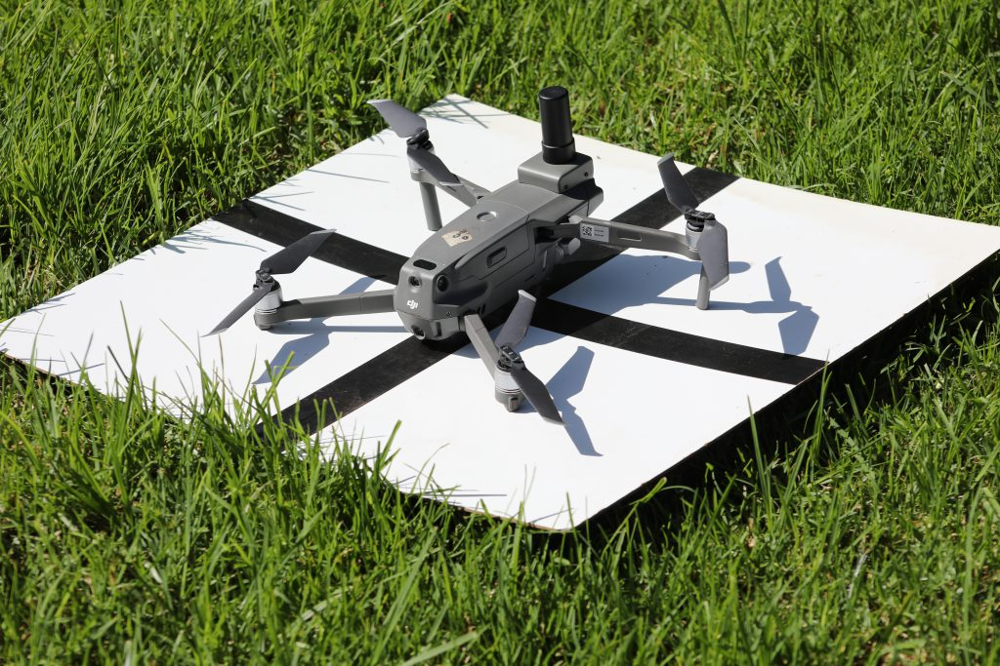

ZIMSAT-1
Zimbabwe’s first satellite, successfully launched in November 2022. Used for monitoring drought conditions, mapping mining activities, assessing crop health, and generating accurate weather forecasts.



Programs
Initiatives driving Zimbabwe’s space and geospatial capabilities.
Zimbabwe’s first satellite, successfully launched in November 2022. Used for monitoring drought conditions, mapping mining activities, assessing crop health, and generating accurate weather forecasts.

Zimbabwe’s second satellite mission, building on the success of ZIMSAT-1 and expanding national capabilities in space technology and Earth observation.


Advanced CubeSat development using 3D printing technology and modern engineering practices to build indigenous small-satellite capability.




Continuously Operating Reference Stations providing GNSS services for surveying, precision agriculture, geophysical research, and ionospheric monitoring across Zimbabwe.

Successfully revised Zimbabwe’s Agro-Ecological Zones using satellite data and geospatial intelligence to support agricultural planning and decision-making across the country.
Developed the comprehensive Zimbabwe Wetlands Master Plan 2021 through extensive satellite-based mapping and analysis, covering the entire nation to support environmental conservation.

Cutting-edge research in space science, geospatial analytics, and satellite constellation development — including UAV programs for precision agriculture and disaster assessment.


Human capital development
ZINGSA’s courses in Space Engineering and GIS turn national programmes into lasting capability — equipping engineers, analysts, and pilots with the skills to design satellites, operate drones, and deliver geospatial intelligence.
From satellite fundamentals to flight-ready hardware.
Connecting Earth observation to decisions on the ground.